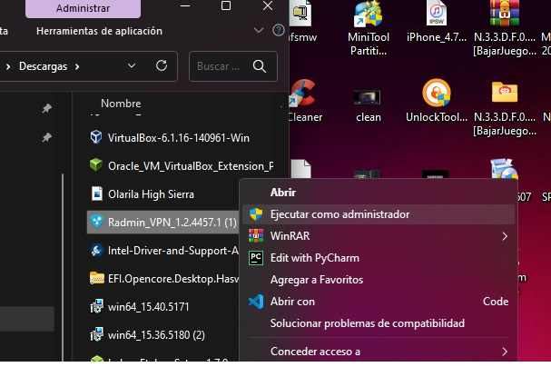
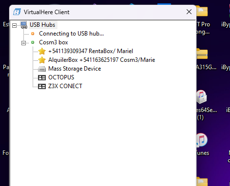
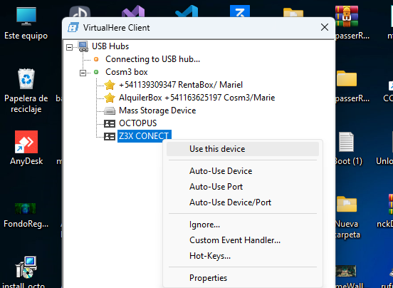

Conexion Remota/Tools
Video Explicativo de conexion al server de Herramientas Cosm3No1de (Z3xTool/ Octopus)
Como configurar mi Computador
>>>"D3SC4RG45">>>
>>"Radmin Vpn">>
>>"AnyDesk">>
>>"Virtual Here">>
>>>>!Pasos Configuracion Server Herramientas¡>>>>>>
1) Instalar Radmin Vpn (Desactivando previamente Antivirus y Firewall)
2) Una vez instalado Radmin Vpn, conectarse a la red Cosm3Noide(123456)
3)Ejecutar Virtual Here
4)Click derecho sobre la Herramienta a usar y dar click izquiero sobre USE THIS TOOL
"PASOS CONFIGURACION Cosm3No1de Server-tool

1)Instalar Radmin Vpn
2)En radmin vpn Unirse a red CosmeNoide(123456)

3)Ejecutar Virtual Here

4)Hacer Clik derecho sobre la TOOL y click izquierdo en use this Tool